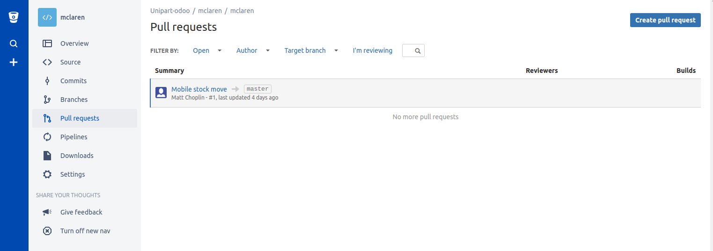
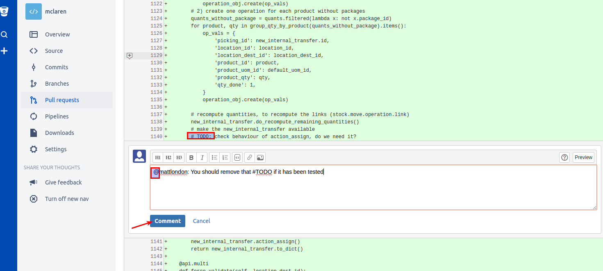
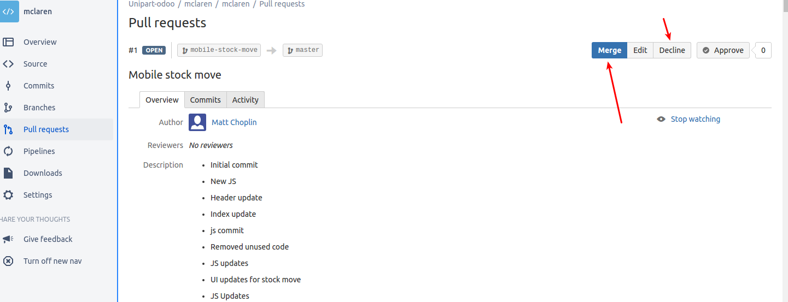
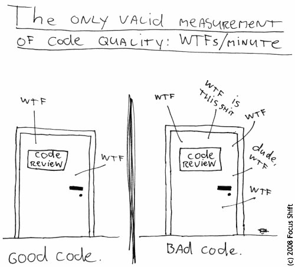

Using an extra tool for code review
- Bitbucket as an example on how to make code reviews more collaborative/interesting/efficient/useful
- It would lead to better communications and more knowledge sharing while delivering to the business
But code reviews take time!
Use the following to optimise for that
- Share the load
- Review before merging
- Use peer pressure to your advantage
What it looks like (1)

List of pending PR
What it looks like (2)

When we comment on a PR, the @mention will receive a notification
What it looks like (3)

Merging and processing PR
Configuring Bitbucket from our existing repo...
- To make the repo point to a bitbucket repo:
git remote set-url origin https://github.com/USERNAME/OTHERREPOSITORY.git
Create a team and link the repo to the team (free until 5 users): https://bitbucket.org/unipartodoo/mclaren (you need an invitation to access the code)
The seven rules of a great Git commit message
- Separate subject from body with a blank line
- Limit the subject line to 50 characters
- Capitalize the subject line
- Do not end the subject line with a period
- Use the imperative mood in the subject line
- Wrap the body at 72 characters
- Use the body to explain what and why vs. how
Source: https://chris.beams.io/posts/git-commit/
How to make efficient code reviews
In an image...
